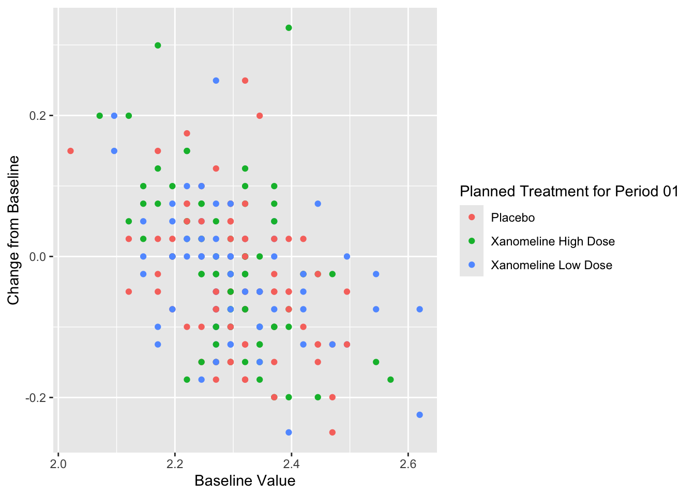
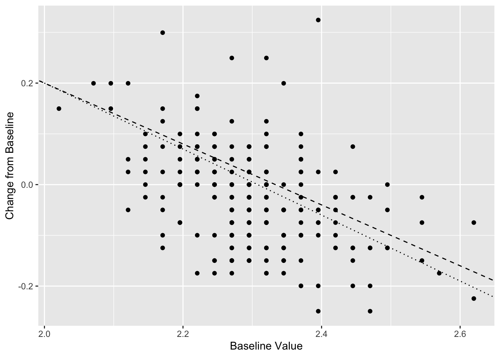
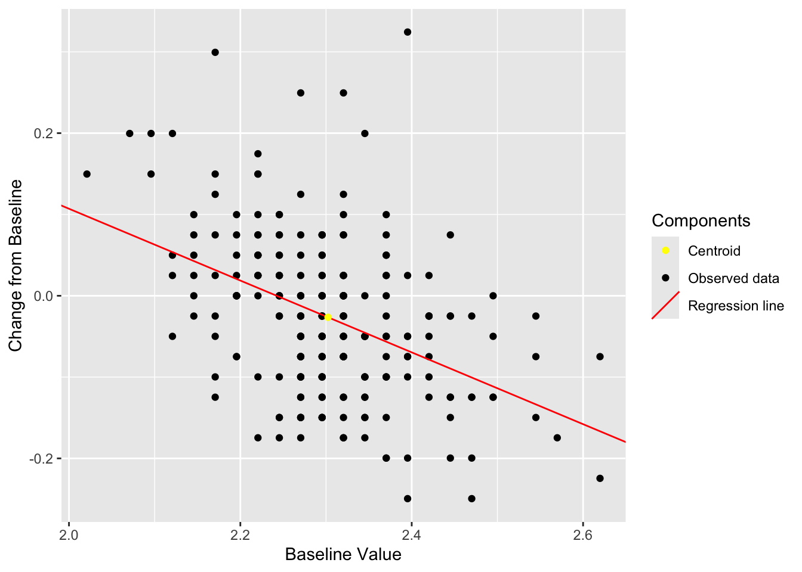
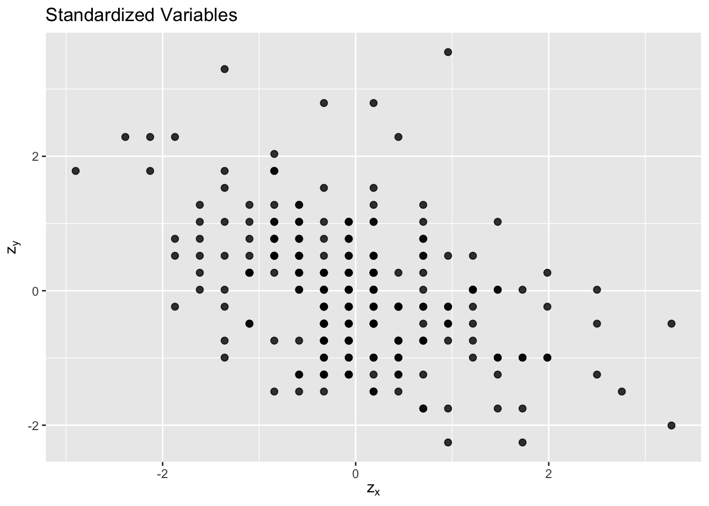
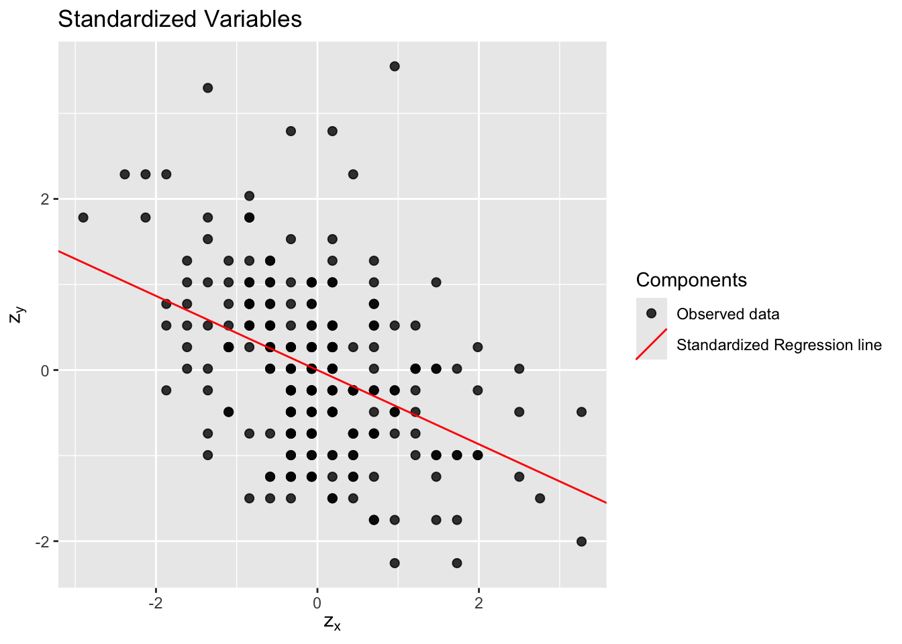

Chapter 3 Simple Linear Regression
Simple linear regression is a statistical method that allows us to summarize and study relationships between two continuous (quantitative) variables. One variable, denoted \(x\), is regarded as the predictor, explanatory, or independent variable. The other variable, denoted \(y\), is regarded as the response, outcome, or dependent variable. The goal of simple linear regression is to find the best-fitting straight line through the points on a scatter plot of \(x\) and \(y\). This line is called the regression line.
\[ y = \beta_0 + \beta_1 x + \varepsilon \] where:
- \(\beta_0\) intercet population parameter;
- \(\beta_1\) slope population parameter;
- \(\varepsilon\) error term.
The mean or expected value of \(y\) for a given value of \(x\). \[ E(y|x) = \beta_0 + \beta_1 x \]
Note \(E(\varepsilon) = 0\) so the regression line captures the average relationship correctly.
We almost never have a population parameter to work with, so we need to estimate the parameters \(b_0\) and \(b_1\) using sample data.
\[ \hat{y} = b_0 + b_1 x \]
3.1 Before regression: Exploratory Data Analysis
Step 1 Plot the data to see if there is a relationship between the two variables.

Step 2 Look for a visual relationship between the two variables. If there is a relationship, we can fit a line to the data.

Step 3 Calculate correlation between the two variables to see if there is a linear relationship between them. For more information see 2.12.
## [1] -0.4335349Step 4 Calculate the centroid \(\bar{x}\), \(\bar{y}\)
Step 5 Calculate the slope and intercept of the regression line using the formulas below.
3.2 Least squares
We are looking for the line that best fits the data points. \[ \hat{y} = b_0 + b_1 x \]
In order to do that we are using the method of least squares, which minimizes the sum of the squared residuals (the vertical distances between the observed values and the predicted values).
\[ min \sum_{i=1}^{n} (y_i - \hat{y_i})^2 \]
where:
- \(y_i\) observer values;
- \(\hat{y_i} = b_0 + b_1 x_i\) estimated(predicted) values.
or using residuals:
\[ RSS = \sum_{i=1}^{n} e_i^2 \]
where \(e_i = y_i - \hat{y_i}\) the \(i\)th residual this is the difference between the \(i\)th observed response value and the \(i\)th response value.
equivalently
\[ RSS = \sum_{i=1}^{n} (y_i - b_0 - b_1 x_i)^2 \]
The least squares approach chooses \(b_0\) and \(b_1\) to minimize the \(RSS\). Using some calculus:
\[ \frac{\partial RSS}{\partial b_0} = -2 \sum_{i=1}^{n} (y_i - b_0 - b_1 x_i) = 0 \]
\[ \frac{\partial RSS}{\partial b_1} = -2 \sum_{i=1}^{n} x_i (y_i - b_0 - b_1 x_i) = 0 \]
Simplify:
\[ \sum y_i = n b_0 + b_1 \sum x_i \tag{1} \]
\[ \sum x_i y_i = b_0 \sum x_i + b_1 \sum x_i^2 \tag{2} \]
from (1):
\[ b_0 = \frac{\sum y_i - b_1 \sum x_i}{n} \]
Substitute \(b_0\) into (2):
\[ \sum x_i y_i = \left( \frac{\sum y_i - b_1 \sum x_i}{n} \right) \sum x_i + b_1 \sum x_i^2 \]
Expand:
\[ \sum x_i y_i = \frac{\sum x_i \sum y_i}{n} - b_1 \frac{(\sum x_i)^2}{n} + b_1 \sum x_i^2 \]
Rearrange terms:
\[ \sum x_i y_i - \frac{\sum x_i \sum y_i}{n} = b_1 \left( \sum x_i^2 - \frac{(\sum x_i)^2}{n} \right) \]
Solve for \(b_1\):
\[ b_1 = \frac{ \sum x_i y_i - \frac{\sum x_i \sum y_i}{n} }{ \sum x_i^2 - \frac{(\sum x_i)^2}{n}} \]
Equivalent centered form:
\[ b_1 = \frac{\sum_{i=1}^{n}(x_i - \bar{x})(y_i - \bar{y})}{\sum_{i=1}^{n}(x_i - \bar{x})^2} \tag{3} \]
and from (1)
\[ b_0 = \bar{y} - b_1 \bar{x} \tag{4} \]
Cozy correlation:
\[ b_1 = r \frac{s_y}{s_x} \]
where:
- \(s_x\) standard deviation of \(x\);
- \(s_y\) standard deviation of \(y\);
3.3 Regression line
\[ \hat{y} = b_0 + b_1 x \]
Find \(b_0\) and \(b_1\) using (3) and (4):
\[b_0 = 0.99\]
\[b_1 = -0.44\]
\[\hat{y_i} = 0.99 + -0.44 x_i\]

3.4 Understanding model error
In simple linear regression, the total variation in the response variable is decomposed into three components:
3.4.1 Total Sum of Squares (SST)
Measures the total variability in the observed data:
\[ SST = \sum_{i=1}^{n}(y_i - \bar{y})^2 \]
\[SST = 2.24\]
3.4.2 Regression Sum of Squares (SSR)
Measures the explained variation by the regression model:
\[ SSR = \sum_{i=1}^{n}(\hat{y_i} - \bar{y})^2 \]
\[SSR = 0.42\]
3.4.3 Error Sum of Squares (SSE)
Measures the unexplained variation (residual error):
\[ SSE = \sum_{i=1}^{n}(y_i - \hat{y_i})^2 \]
\[SSE = 1.82\]
3.4.5 Coefficient of Determination (\(R^2\))
Another way to measure the contribution of \(x\) in predicting \(y\) is to consider how much the errors of prediction can be reduced by using the information provided by \(x\).
\[ R^2 = \frac{SSR}{SST} = \frac{SST - SSE}{SST} = 1 - \frac{SSE}{SST} = 1 - \frac{\sum (y_i - \hat{y_i})^2}{\sum (y_i - \bar{y})^2} \]
\[R^2 = 0.188\]
[1] 0.1879525
Practical interpratation of the Coefficient of Determination:
About $ 100(R^2) % $ for the total sum of squeres of deviations of the sample \(y\) values about their mean \(\bar{y}\) can be explained by using \(x\) to predict
\(y\) in the straight line regression model. The remaining \(100(1-R^2) %\) of the total sum of squares is due to the variability in \(y\) that cannot be explained by the linear relationship with \(x\).
3.4.6 Adjusted R-squared
Adjusted \(R^2\) accounts for the number of predictors in the model and penalizes unnecessary complexity.
\[ R^2_{adj} = 1 - \frac{(1 - R^2)(n - 1)}{n - p - 1} \]
where:
- \(p\) = number of predictors
p <- 1 # number of predictors
R2_adj <- 1 - ((1 - SSR/SST) * (n - 1)) / (n - p - 1)
sprintf("$$R^2_{adj} = %.3f$$", round(R2_adj, 3)) %>% cat()\[R^2_{adj} = 0.184\]
[1] 0.1843909
3.5 Standardized Variables
Let us standardize the variables \(x\) and \(y\) so that they each have mean \(0\) and standard deviation \(1\).
The standardized versions are:
\[ z_{x,i} = \frac{x_i - \bar{x}}{s_x} \]
and
\[ z_{y,i} = \frac{y_i - \bar{y}}{s_y} \]
where:
- \(\bar{x}\) and \(\bar{y}\) are the sample means
- \(s_x\) and \(s_y\) are the sample standard deviations
After standardization:
\[ E(z_x) = 0 \qquad E(z_y) = 0 \]
and
\[ SD(z_x) = 1 \qquad SD(z_y) = 1 \]

3.5.1 Correlation
Lets check the correlation between the standardized variables:
cor(adlb_wide$BASE_CA, adlb_wide$CHG_CA) %>% round(3) %>%
sprintf("Original correlation $$r = %.3f$$", .) %>% cat()Original correlation \[r = -0.434\]
cor(adlb_std$z_BASE_CA, adlb_std$z_CHG_CA) %>% round(3) %>%
sprintf("Correlation of standardized variables $$r = %.3f$$", .) %>% cat()Correlation of standardized variables \[r = -0.434\]
We can see that correlatio between the original variables and the standardized variables is the same.
3.5.2 Standardized Regression
Consider the simple linear regression model after standardizing both variables the standardized regression model becomes:
\[ z_{y,i} = b_1^{*} z_{x,i} + \varepsilon_i \]
where:
\[ b_1^{*} = r_{xy} \]
is the sample correlation between \(x\) and \(y\). Since standardized variables have mean \(0\):
\[ b_0^{*} = 0 \]
Thus, the standardized regression line passes through the origin.

Using standardized scores can help:
- interprete variables with different scales;
- helpful to see general patterns in the data;
- help to see which variable offer more to keep and which to drop;
- determine whiich variable in multiple regression account for more variance in the response variable.
3.6 Statistical sagnificance
- Overal \(F\)-test or \(t\) test is sagnificant;
- Can we reject \(H_0\) that the slope \(b_1\) is zero;
- Does confidence inteval for \(b_1\) contain zero.
3.6.1 Confidence interval for slope
##
## Call:
## lm(formula = CHG_CA ~ BASE_CA, data = .)
##
## Residuals:
## Min 1Q Median 3Q Max
## -0.18431 -0.05607 -0.00446 0.05355 0.39183
##
## Coefficients:
## Estimate Std. Error t value Pr(>|t|)
## (Intercept) 0.9904 0.1401 7.069 1.89e-11 ***
## BASE_CA -0.4417 0.0608 -7.264 5.89e-12 ***
## ---
## Signif. codes: 0 '***' 0.001 '**' 0.01 '*' 0.05 '.' 0.1 ' ' 1
##
## Residual standard error: 0.08925 on 228 degrees of freedom
## Multiple R-squared: 0.188, Adjusted R-squared: 0.1844
## F-statistic: 52.77 on 1 and 228 DF, p-value: 5.888e-12